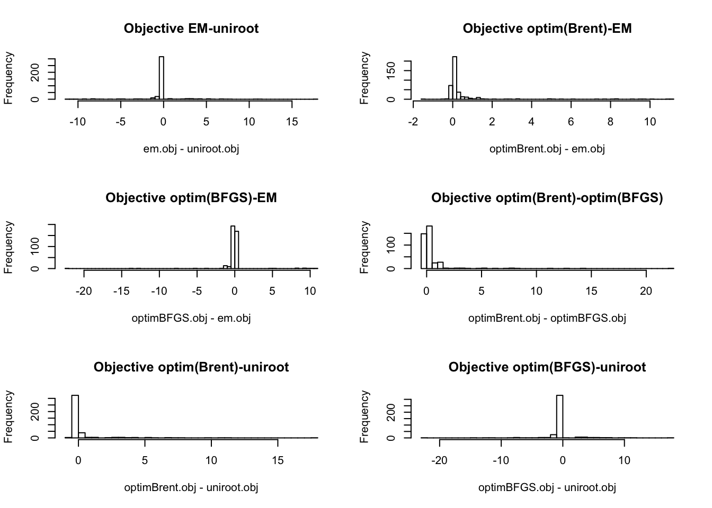
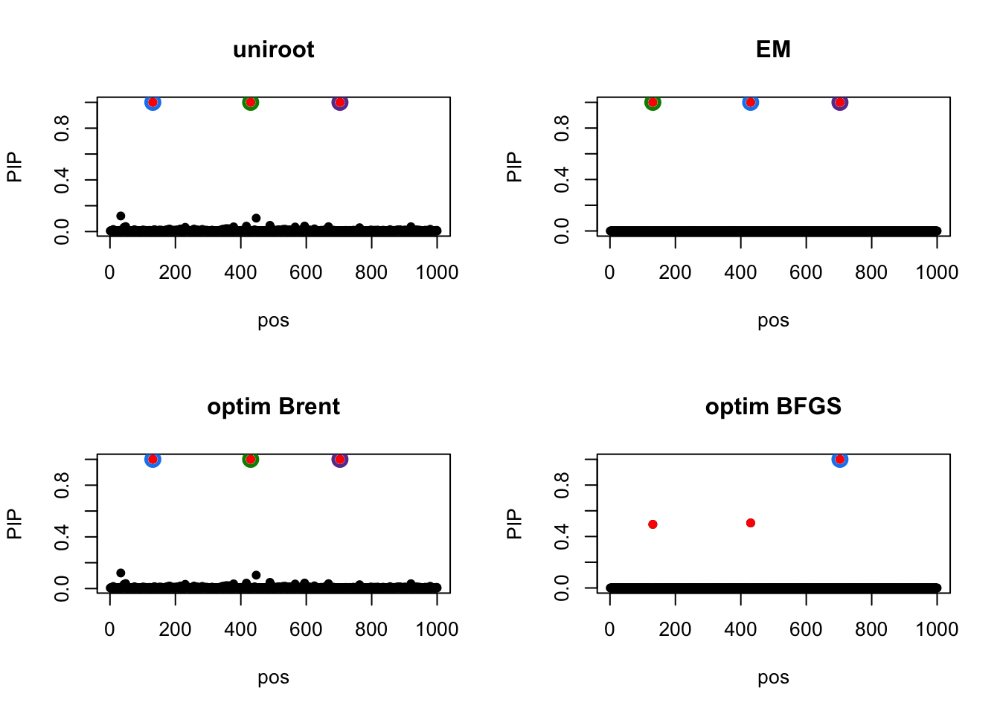

SuSiE Estimate Prior Variance Methods Comparison
Yuxin Zou
2020-03-03
Last updated: 2020-03-04
Checks: 7 0
Knit directory: dsc-susie-z/
This reproducible R Markdown analysis was created with workflowr (version 1.5.0). The Checks tab describes the reproducibility checks that were applied when the results were created. The Past versions tab lists the development history.
Great! Since the R Markdown file has been committed to the Git repository, you know the exact version of the code that produced these results.
Great job! The global environment was empty. Objects defined in the global environment can affect the analysis in your R Markdown file in unknown ways. For reproduciblity it’s best to always run the code in an empty environment.
The command set.seed(20190115) was run prior to running the code in the R Markdown file. Setting a seed ensures that any results that rely on randomness, e.g. subsampling or permutations, are reproducible.
Great job! Recording the operating system, R version, and package versions is critical for reproducibility.
Nice! There were no cached chunks for this analysis, so you can be confident that you successfully produced the results during this run.
Great job! Using relative paths to the files within your workflowr project makes it easier to run your code on other machines.
Great! You are using Git for version control. Tracking code development and connecting the code version to the results is critical for reproducibility. The version displayed above was the version of the Git repository at the time these results were generated.
Note that you need to be careful to ensure that all relevant files for the analysis have been committed to Git prior to generating the results (you can use wflow_publish or wflow_git_commit). workflowr only checks the R Markdown file, but you know if there are other scripts or data files that it depends on. Below is the status of the Git repository when the results were generated:
Ignored files:
Ignored: .DS_Store
Ignored: .Rhistory
Ignored: .Rproj.user/
Ignored: .sos/
Ignored: analysis/.DS_Store
Ignored: code/.Rhistory
Ignored: data/.DS_Store
Ignored: output/.DS_Store
Ignored: output/SuSiEFD/.DS_Store
Untracked files:
Untracked: code/N2finemapping.CAVIAR.rds
Untracked: code/N2finemapping.FINEMAP.rds
Untracked: code/ROC.R
Untracked: code/caviar.R
Untracked: code/caviar.res._condition_1.log
Untracked: code/caviar.res._condition_1.z
Untracked: code/caviar.res._condition_1_post
Untracked: code/caviar.res._condition_1_set
Untracked: code/caviarld.ld
Untracked: code/cs_compare.R
Untracked: code/finemap.R
Untracked: code/finemap.res._condition_1.config
Untracked: code/finemap.res._condition_1.log
Untracked: code/finemap.res._condition_1.master
Untracked: code/finemap.res._condition_1.snp
Untracked: code/finemap.res._condition_1.z
Untracked: code/finemapld.ld
Untracked: code/pip_calibration.R
Untracked: code/pip_compare.R
Untracked: code/pip_extract.R
Untracked: code/query.R
Untracked: data/random_data_31.rds
Untracked: data/random_data_31_sim_gaussian_35.rds
Untracked: data/random_data_31_sim_gaussian_35_get_sumstats_1.rds
Untracked: data/small_data_1.ld_in_file.in.ld
Untracked: data/small_data_1.ld_out_file.out.ld
Untracked: data/small_data_132.ld_in_file.in.ld
Untracked: data/small_data_132.ld_out_file.out.ld
Untracked: data/small_data_132_sim_gaussian_12.rds
Untracked: data/small_data_132_sim_gaussian_12_get_sumstats_1.rds
Untracked: data/small_data_1_sim_gaussian_2.rds
Untracked: data/small_data_1_sim_gaussian_2_get_sumstats_1.rds
Untracked: data/small_data_46.rds
Untracked: data/small_data_46_sim_gaussian_10.rds
Untracked: data/small_data_46_sim_gaussian_10_get_sumstats_2.rds
Untracked: data/small_data_69.ld_in_file.in.ld
Untracked: data/small_data_69.ld_out_file.out.ld
Untracked: data/small_data_69.rds
Untracked: data/small_data_69_sim_gaussian_3.rds
Untracked: data/small_data_69_sim_gaussian_3_get_sumstats_1.rds
Untracked: data/small_data_69_sim_gaussian_3_get_sumstats_1_susie_z_1.rds
Untracked: data/small_data_69_sim_gaussian_3_get_sumstats_1_susie_z_2.rds
Untracked: figure/
Untracked: output/SuSiEFD/r.in.pdf
Untracked: output/SuSiEFD/r.out.addz.pdf
Untracked: output/SuSiEFD/r.out.pdf
Untracked: output/SuSiEFD/small_data_148.ld_in_file.in.ld
Untracked: output/SuSiEFD/small_data_148.ld_out_file.out.ld
Untracked: output/SuSiEFD/small_data_148.rds
Untracked: output/SuSiEFD/small_data_148_sim_gaussian_1.rds
Untracked: output/SuSiEFD/small_data_148_sim_gaussian_1_get_sumstats_1.rds
Untracked: output/SuSiEFD/small_data_148_sim_gaussian_1_get_sumstats_1_caviar_4.cache.CAVIAR_condition_1.z
Untracked: output/SuSiEFD/small_data_148_sim_gaussian_1_get_sumstats_1_caviar_4.ld_out_z_file.out.z.ld
Untracked: output/SuSiEFD/small_data_68_sim_gaussian_2_get_sumstats_1_caviar_4.cache.CAVIAR_condition_1.z
Untracked: output/SuSiEFD/small_data_68_sim_gaussian_2_get_sumstats_1_caviar_4.ld_out_z_file.out.z.ld
Untracked: output/SuSiEFD/susierss.in.2.gif
Untracked: output/SuSiEFD/susierss.in.2.pdf
Untracked: output/SuSiEFD/susierss.out.2.gif
Untracked: output/SuSiEFD/susierss.out.2.pdf
Untracked: output/SuSiEFD/susierss.out.addz.1.gif
Untracked: output/SuSiEFD/susierss.out.addz.1.pdf
Untracked: output/SuSiEFD/susierss.out.addz.2.pdf
Untracked: output/SuSiEFD/susierss.out.addz.2.w.gif
Untracked: output/SuSiEFD/susierss.out.addz.2.w.pdf
Untracked: output/SuSiEFD/susierss.out.addz.5.pdf.gif
Untracked: output/SuSiEFD/susierss.out.addz.5.pdf.pdf
Untracked: output/dsc_susie_v_output.rds
Untracked: output/dscoutProblem475.rds
Untracked: output/dscoutProblem75.rds
Untracked: output/finemap_compare_random_data_null_dscout.rds
Untracked: output/finemap_compare_random_data_signal_dscout.rds
Untracked: output/finemap_compare_small_data_signal_dscout.rds
Untracked: output/finemap_compare_small_data_signal_dscout_RE8.rds
Untracked: output/r_compare_FINEMAP_PIP_ROC.rds
Untracked: output/r_compare_add_z_FINEMAP_PIP_ROC.rds
Untracked: output/r_compare_add_z_FINEMAP_ROC.rds
Untracked: output/r_compare_add_z_SuSiEb_ROC.rds
Untracked: output/r_compare_add_z_SuSiErss_ROC.rds
Untracked: output/r_compare_add_z_dscout_susie_finemap_tibble.rds
Untracked: output/r_compare_add_z_lambda_FINEMAP_ROC.rds
Untracked: output/r_compare_add_z_lambda_SuSiEb_ROC.rds
Untracked: output/r_compare_add_z_lambda_SuSiErss_ROC.rds
Untracked: output/r_compare_add_z_lambda_caviar_CAVIAR_ROC.rds
Untracked: output/r_compare_add_z_lambda_caviar_FINEMAP_ROC.rds
Untracked: output/r_compare_add_z_lambda_caviar_SuSiEb_L1_ROC.rds
Untracked: output/r_compare_add_z_lambda_caviar_SuSiEb_L2_ROC.rds
Untracked: output/r_compare_add_z_lambda_caviar_SuSiEb_L5_ROC.rds
Untracked: output/r_compare_add_z_lambda_caviar_SuSiErss_L1_ROC.rds
Untracked: output/r_compare_add_z_lambda_caviar_SuSiErss_L2_ROC.rds
Untracked: output/r_compare_add_z_lambda_caviar_SuSiErss_L5_ROC.rds
Untracked: output/r_compare_add_z_lambda_caviar_dscout_caviar_tibble.rds
Untracked: output/r_compare_add_z_lambda_caviar_dscout_finemap_tibble.rds
Untracked: output/r_compare_add_z_lambda_caviar_dscout_susiebhat_tibble.rds
Untracked: output/r_compare_add_z_lambda_caviar_dscout_susierss_tibble.rds
Untracked: output/r_compare_add_z_lambda_dscout_susie_finemap_tibble.rds
Untracked: output/r_compare_dscout_susie_finemappip_tibble.rds
Untracked: output/r_compare_dscout_susie_finemappip_truth_tibble.rds
Untracked: output/r_compare_finemap_v1.3.1_ROC.rds
Untracked: output/r_compare_finemapv1.3.1.rds
Untracked: output/r_compare_maf0.05_SuSiERSS_L2_ROC.rds
Untracked: output/r_compare_maf0.05_SuSiERSS_L5_ROC.rds
Untracked: output/r_compare_maf0.05_SuSiEb_L2_ROC.rds
Untracked: output/r_compare_maf0.05_SuSiEb_L5_ROC.rds
Untracked: output/r_compare_maf0_SuSiERSS_L2_ROC.rds
Untracked: output/r_compare_maf0_SuSiERSS_L5_ROC.rds
Untracked: output/r_compare_maf0_SuSiEb_L2_ROC.rds
Untracked: output/r_compare_maf0_SuSiEb_L5_ROC.rds
Untracked: output/r_compare_maf_dscout_caviar_maf0.05_tibble.rds
Untracked: output/r_compare_maf_dscout_caviar_maf0_tibble.rds
Untracked: output/r_compare_maf_dscout_finemap_maf0.05_tibble.rds
Untracked: output/r_compare_maf_dscout_finemap_maf0_tibble.rds
Untracked: output/r_compare_maf_dscout_susiebhat_maf0.05_tibble.rds
Untracked: output/r_compare_maf_dscout_susiebhat_maf0_tibble.rds
Untracked: output/r_compare_maf_dscout_susierss_maf0.05_tibble.rds
Untracked: output/r_compare_maf_dscout_susierss_maf0_tibble.rds
Untracked: output/r_compare_mafall_FINEMAP_L2_ROC.rds
Untracked: output/r_compare_mafall_FINEMAP_L5_ROC.rds
Untracked: output/r_compare_mafall_caviar_ROC.rds
Untracked: output/r_compare_susieb_PIP_ROC.rds
Untracked: output/r_compare_susiepip_tibble.rds
Untracked: output/r_compare_susierss_PIP_ROC.rds
Untracked: output/random_data_100_sim_gaussian_null_1_get_sumstats_1_finemap_1.rds
Untracked: output/random_data_31_35_fit_em.rds
Untracked: output/random_data_76.rds
Untracked: output/random_data_76_sim_gaussian_8.rds
Untracked: output/random_data_76_sim_gaussian_8_get_sumstats_1.rds
Untracked: output/random_data_79.rds
Untracked: output/random_data_79_sim_gaussian_6.rds
Untracked: output/small_data_42_sim_gaussian_36_get_sumstats_2_susie_z_2.rds
Untracked: output/small_data_92_sim_gaussian_30_get_sumstats_2_susie_z_2.rds
Unstaged changes:
Modified: analysis/SuSiErssNotConverge.Rmd
Modified: analysis/SusieZPerformance.Rmd
Modified: analysis/SusieZPerformanceRE3.Rmd
Modified: analysis/r_compare_add_z_lambda_caviar_susierss_ROC.Rmd
Modified: output/dsc_susie_z_v_output.rds
Deleted: susie_z_gaussian_benchmark.dsc
Note that any generated files, e.g. HTML, png, CSS, etc., are not included in this status report because it is ok for generated content to have uncommitted changes.
These are the previous versions of the R Markdown and HTML files. If you’ve configured a remote Git repository (see ?wflow_git_remote), click on the hyperlinks in the table below to view them.
| File | Version | Author | Date | Message |
|---|---|---|---|---|
| Rmd | 0bc4b87 | zouyuxin | 2020-03-04 | wflow_publish(“analysis/SusiePriorVarCompare.Rmd”) |
library(dscrutils)
out = dscquery('output/susie_V', targets = c('simulate.pve', 'simulate.n_signal',
'simulate.effect_weight',
'susie_uniroot.V_method',
'susie_em.V_method',
'susie_optim_Brent.V_method',
'susie_optim_BFGS.V_method',
'score_susie.objective',
'score_susie.converged',
'score_susie.total',
'score_susie.valid',
'susie_uniroot.DSC_TIME',
'susie_em.DSC_TIME',
'susie_optim_Brent.DSC_TIME',
'susie_optim_BFGS.DSC_TIME','score_susie'),
module.output.files = "score_susie")library(dplyr)
Attaching package: 'dplyr'The following objects are masked from 'package:stats':
filter, lagThe following objects are masked from 'package:base':
intersect, setdiff, setequal, unionlibrary(knitr)
library(kableExtra)
Attaching package: 'kableExtra'The following object is masked from 'package:dplyr':
group_rowslibrary(susieR)dscout = readRDS('output/dsc_susie_v_output.rds')
colnames(dscout) = c('DSC', 'pve', 'n_signal', 'effect_weight', 'method_uniroot', 'method_em', 'method_optim_Brent', 'method_optim_BFGS','objective', 'converged', 'total', 'valid', 'time_uniroot', 'time_em', 'time_optim_Brent', 'time_optim_BFGS', 'file')
dscout$effect_weight[which(dscout$effect_weight == 'rep(1/n_signal, n_signal)')] = 'equal'
dscout$effect_weight[which(dscout$effect_weight != 'equal')] = 'notequal'
method = dscout$method_uniroot
method[dscout$method_em == 'EM'] = 'em'
method[dscout$method_optim_Brent == 'optim_Brent'] = 'optim_Brent'
method[dscout$method_optim_BFGS == 'optim_BFGS'] = 'optim_BFGS'
Time = dscout$time_uniroot
Time[!is.na(dscout$time_em)] = dscout$time_em[!is.na(dscout$time_em)]
Time[!is.na(dscout$time_optim_Brent)] = dscout$time_optim_Brent[!is.na(dscout$time_optim_Brent)]
Time[!is.na(dscout$time_optim_BFGS)] = dscout$time_optim_BFGS[!is.na(dscout$time_optim_BFGS)]
dscout = cbind(dscout, method, Time)
dscout = dscout[, -c(5:8, 13:16)]We randomly generate X from N(0,1), n = 1200, p = 1000.
We randomly generate the response with 3 signals, pve (0.1, 0.2), whether the signals have the same effect size. We fit SuSiE model with L = 10.
We perform simulations to compare three methods uniroot, em, optim(Brent) and optim(BFGS). There are 100 replicates in the simulation.
Comparing objective from different methods
uniroot.obj = dscout$objective[dscout$method == 'uniroot']
em.obj = dscout$objective[dscout$method == 'em']
optimBrent.obj = dscout$objective[dscout$method == 'optim_Brent']
optimBFGS.obj = dscout$objective[dscout$method == 'optim_BFGS']par(mfrow=c(2,2))
hist(em.obj - uniroot.obj, main='Objective EM-uniroot', breaks=50)
hist(optimBrent.obj - em.obj, main='Objective optim(Brent)-EM', breaks=50)
hist(optimBFGS.obj - em.obj, main='Objective optim(BFGS)-EM', breaks=50)
hist(optimBrent.obj - optimBFGS.obj, main='Objective optim(Brent)-optim(BFGS)', breaks=50)
From this comparison, we can see optim(Brent) achieves higher objective.
LEt’s check the difference between objectives from Brent and BFGS:
summary(optimBrent.obj - optimBFGS.obj) Min. 1st Qu. Median Mean 3rd Qu. Max.
0.000000 0.000000 0.002959 0.518177 0.304593 22.389742 boxplot(optimBrent.obj - optimBFGS.obj, horizontal=TRUE){plot(optimBrent.obj, optimBFGS.obj)
abline(0,1)}Computing speed
library(ggplot2)
p <- ggplot(dscout, aes(x=method, y=Time)) + geom_violin(trim = FALSE) + coord_flip() + stat_summary(fun.y=mean, geom="point", shape=23, size=2)
pWe measure the seconds the model converges under different methods. optim(BFGS) has shorter runtime.
One example
The simulated data has pve 0.2.
data79.X = readRDS('output/random_data_79.rds')
data79.y = readRDS('output/random_data_79_sim_gaussian_6.rds')
time.optimBrent = system.time(m_optimBrent <- susieR::susie(data79.X$X, data79.y$Y, L=10, estimate_prior_method = 'optim_Brent'))['elapsed']
time.optimBFGS = system.time(m_optimBFGS <- susieR::susie(data79.X$X, data79.y$Y, L=10, estimate_prior_method = 'optim_BFGS'))['elapsed']
time.uniroot = system.time(m_uniroot <- susieR::susie(data79.X$X, data79.y$Y, L=10, estimate_prior_method = 'uniroot'))['elapsed']
time.em = system.time(m_em <- susieR::susie(data79.X$X, data79.y$Y, L=10, estimate_prior_method = 'EM'))['elapsed']The truth is
ss = susieR:::univariate_regression(data79.X$X, data79.y$Y)
m_optimBrent <- susieR::susie(data79.X$X, data79.y$Y, L=10, estimate_prior_method = 'optim_Brent', compute_univariate_zscore = T)
susie_plot(m_optimBrent, y='z', b=data79.y$meta$true_coef, main='Truth')The result from different methods:
susie_plot(m_uniroot, y='PIP', b=data79.y$meta$true_coef, main='uniroot')
susie_plot(m_em, y='PIP', b=data79.y$meta$true_coef, main='EM')
susie_plot(m_optimBrent, y='PIP', b=data79.y$meta$true_coef, main='optim Brent')
susie_plot(m_optimBFGS, y='PIP', b=data79.y$meta$true_coef, main='optim BFGS')
Time = c(time.uniroot, time.em, time.optimBrent, time.optimBFGS)
niter = c(m_uniroot$niter, m_em$niter, m_optimBrent$niter, m_optimBFGS$niter)
objective = c(susie_get_objective(m_uniroot), susie_get_objective(m_em), susie_get_objective(m_optimBrent), susie_get_objective(m_optimBFGS))
res = rbind(Time, niter, objective)
colnames(res) = c('uniroot', 'EM', 'optimBrent', 'optimBFGS')
res %>% kable() %>% kable_styling()| uniroot | EM | optimBrent | optimBFGS | |
|---|---|---|---|---|
| Time | 0.995 | 0.605 | 1.107 | 0.489 |
| niter | 7.000 | 5.000 | 7.000 | 3.000 |
| objective | -1620.379 | -1620.549 | -1620.379 | -1642.769 |
The objectives from optim(BFGS) is smaller than other methods and it ignores 2 signals.
sessionInfo()R version 3.5.3 (2019-03-11)
Platform: x86_64-apple-darwin15.6.0 (64-bit)
Running under: macOS 10.15.3
Matrix products: default
BLAS: /Library/Frameworks/R.framework/Versions/3.5/Resources/lib/libRblas.0.dylib
LAPACK: /Library/Frameworks/R.framework/Versions/3.5/Resources/lib/libRlapack.dylib
locale:
[1] en_US.UTF-8/en_US.UTF-8/en_US.UTF-8/C/en_US.UTF-8/en_US.UTF-8
attached base packages:
[1] stats graphics grDevices utils datasets methods base
other attached packages:
[1] ggplot2_3.2.0 susieR_0.9.0.0581 kableExtra_1.1.0 knitr_1.23
[5] dplyr_0.8.1
loaded via a namespace (and not attached):
[1] Rcpp_1.0.3 highr_0.8 compiler_3.5.3
[4] pillar_1.4.2 later_0.8.0 git2r_0.26.1
[7] workflowr_1.5.0 tools_3.5.3 digest_0.6.25
[10] gtable_0.3.0 lattice_0.20-38 viridisLite_0.3.0
[13] evaluate_0.13 tibble_2.1.3 pkgconfig_2.0.3
[16] rlang_0.4.4 Matrix_1.2-15 rstudioapi_0.10
[19] yaml_2.2.0 xfun_0.7 withr_2.1.2
[22] stringr_1.4.0 httr_1.4.0 xml2_1.2.0
[25] fs_1.3.1 vctrs_0.2.3 hms_0.5.3
[28] grid_3.5.3 webshot_0.5.1 rprojroot_1.3-2
[31] tidyselect_0.2.5 glue_1.3.1 R6_2.4.1
[34] rmarkdown_1.13 purrr_0.3.3 readr_1.3.1
[37] magrittr_1.5 whisker_0.3-2 backports_1.1.5
[40] scales_1.0.0 promises_1.0.1 htmltools_0.3.6
[43] assertthat_0.2.1 rvest_0.3.4 colorspace_1.4-1
[46] httpuv_1.5.1 labeling_0.3 stringi_1.4.3
[49] lazyeval_0.2.2 munsell_0.5.0 crayon_1.3.4